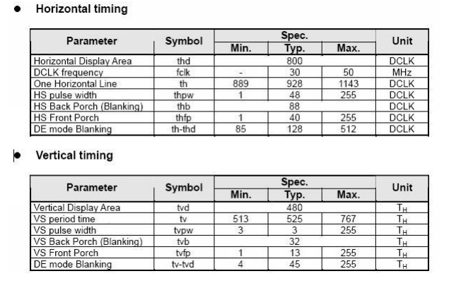

10.2.1. RGB屏调试配置¶
10.2.1.1. 概述¶
相比MIPI屏的调试，RGB屏的调试相对简单，只需要把规格书中所描述的时序和规格参数加入相应的配置文件即可，不需要额外的驱动程序。 此章节详细的描述一款RGB显示屏的调试过程和配置方法。
10.2.1.3. DTS参数配置¶
这些参数主要在文件target/d211/方案x/board.dts中，功能参数的设置必须和硬件原理图相匹配
首先设置显示模块数据通路关系，RGB屏幕数据通路如下：
&fb0 { port { fb0_out: endpoint { remote-endpoint = <&de0_in>; }; }; }; &de0 { status = "okay"; port@0 { reg = <0>; de0_in: endpoint { remote-endpoint = <&fb0_out>; }; }; port@1 { reg = <1>; de0_out: endpoint { remote-endpoint = <&rgb0_in>; }; }; }; &rgb0 { status = "okay"; port@0 { reg = <0>; rgb0_in: endpoint { remote-endpoint = <&de0_out>; }; }; port@1 { reg = <1>; rgb0_out: endpoint { remote-endpoint = <&panel_rgb_in>; }; }; };
在上述例子中，board.dts通过port和status结点，定义了一条数据通道。
fb | de | | rgb | panel port --> port0 port1 --> port0 port1 --> port
如果board.dts中没有正确定义一条数据通道，显示驱动可能无法完成初始化。
设置屏幕参数
panel_rgb { compatible = "artinchip,aic-general-rgb-panel"; enable-gpios = <&gpio_a 4 GPIO_ACTIVE_HIGH>; rgb-mode = <PRGB>; interface-format = <PRGB_24BIT>; clock-phase = <DEGREE_90>; data-order = <RGB>; data-mirror; status = "okay"; port { panel_rgb_in: endpoint { remote-endpoint = <&rgb0_out>; }; }; display-timings { native-mode = <&timing0>; timing0: 800x480 { clock-frequency = <30000000>; hactive = <800>; vactive = <480>; hback-porch = <88>; hfront-porch = <40>; hsync-len = <48>; vback-porch = <32>; vfront-porch = <13>; vsync-len = <3>; de-active = <1>; pixelclk-active = <1>; }; }; };
其中类似
enable-gpios控制引脚需要根据实际显示屏的需要增加或减少，驱动中做相应修改，rgb-modeinterface-format需要从规格书中获取，data-orderdata-mirror需要根据板级走线的顺序设置相关参数。clock-phase需要根据最终实际的显示效果做相应调整。 关于参数详细的解析请参考 显示部分章节DTS关于pannel_rgb的配置说明其中参数
display-timings需要从屏幕规格书中或供应商处获取，例如规格书会有如下信息：

10.2.1.4. 调试¶
调试部分请查看 显示部分章节关于常见问题的调试说明